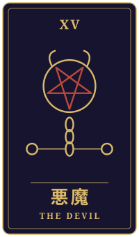

見送る手
物語の手前に、ひとつの相談がありました。三枚のタロットをめぐるやりとりを、聞こえたままに書き留めています。
持ち込まれた相談
来年の春で定年になります。造船所で四十年近く溶接をしてきました。会社からは再雇用で残らないかと言われていますが、返事を先延ばしにしています。息子は何年も前に東南アジアへ渡り、向こうで暮らしています。妻の葬儀のあとに言い合いをしてから、ほとんど連絡を取っていません。今朝、遠い海へ向かう船のニュースを見て、自分は港で人の船を見送ってばかりだったと思いました。仕事を続けるべきか、思い切って息子に会いに行くべきか。会いに行っても迷惑がられるだけではないかと怖いのです。本当は寂しいのだと、誰にも言えずにいます。この先、私はどう動けばいいのでしょうか。
タロットの読み解き

過去
皇帝・正位置
過去には皇帝の正位置が出ていますね。四十年近く、家族と職場を支えるために責任を背負って歩んでこられた、その堅実さが浮かんできます。港で人の船を見送ってきたと感じられたのも、誰かを守るために立ち続けてきた方だからこそかもしれません。

現在
正義・逆位置
現在は正義の逆位置です。返事を先延ばしにしている今の揺れが、そのまま表れているように見えます。息子さんとのことを「どちらが悪いか」という天秤で測り続けると、かえって動けなくなってしまうものです。優柔不断というより、どちらも大切だからこそ選べずにいるのだと思いますよ。

未来
悪魔・逆位置
悪魔の逆位置には、縛られていたものがほどけていく合図という読み方もできます。長く抱えてきた「迷惑をかけたくない」という思いや、言えずにいた寂しさから、少しずつ解放されていくのかもしれません。会いに行くかどうかは、まだ決めなくても構いません。まずは一本の電話や一通の手紙から、関係をたどり直してみてはどうでしょう。
最後に
仕事を続けるか、息子さんに会いに行くか。どちらか一方を選ばなければならないわけではないのかもしれません。皇帝のように責任を果たしてこられた方だからこそ、ご自身の寂しさにも正直になっていい時期なのだと思います。再雇用や生活のことは、会社の方やご家族、必要であれば専門の窓口とも話し合いながら、焦らず決めてくださいね。息子さんの言葉を受け取る心の準備が整ったとき、親子の道がもう一度つながるかもしれません。
帰り際の問い鎖を外した後、何を選ぶのか。
読み解きは、タロット占い「月夜のアルカナ」が、この相談と引かれた三枚から返したものです。小説は同じ三枚を、別の角度から描いています。相談者は物語のための架空の人物です。相談文・読み解き・短編本文は、いずれも生成AIを使って制作しています。
物語に戻る